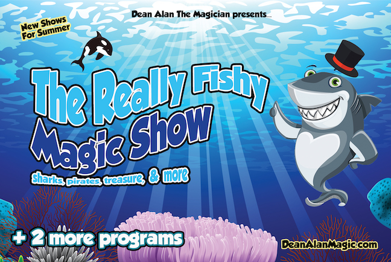

Nashville Summer Camp Magician
Nashville Summer Camp Magician Is An Audience Favorite During The Hot Summer Months!

Nashville Summer Camp Magician Dean Alan is the BEST in area. Each Summer he presents well over 100 shows at Summer Camps. This is one magical entertainer who doesn’t like to relax!
Nashville Summer Camp Magician does the BEST Summer Camp Magic Shows for 20 years & running! Summer Camp Magic Shows for Nashville, Mt. Juliet, Lebanon, Gallatin, and beyond.
Dean’s summer camp magic shows & programs are jammed full of amazing magic. The shows are also quite funny! After-all, who doesn’t like to laugh and have a great time? Some years he will offer a magic workshop, this is an opportunity for kids to learn how to do some simple magic tricks. Many camps have Dean Alan several times during the summer just because he is an audience favorite and because he offers multiple programs!
Pay close attention to the themes. Many magicians do, ‘generic magic shows’. But Dean Alan offers at least one themed program every summer. This year the theme covers: The Ocean, Fish, Sharks, Pirates, Treasure, and Mermaids!
Every Summer for the past 20+ years, Dean Alan has brought out two new programs for Summer Campers. This year for preschoolers Dean will present his new magic show, A Really FISHY Magic Show. This is an updated version of the Mermaid Magic Show from Summer 2020 (when almost everything was canceled due to ….you know what) And for school-agers, they have a choice between a Magic Workshop or The Marvelous Magic Show.
Dean Alan has over 20 years of experience thrilling audience with his shows of magic and wonder. He has produced over 50 different programs during his career and continues to create new and fun programs each year. Dean offers programs all year long, not just in the summer time.
If you are looking for quality, experience, reliability and a FANTASTIC SHOW, then you want the best, you want the one and only Nashville Summer Camp Magician, Dean Alan!
Check out some of my reviews on Facebook. Check out some of my reviews on this site.
If you’re interested in finding out more about Dean Alan, simply click here!